©2010 Google -
Code Home -
Terms of Service -
Privacy Policy -
Site Directory
Google Code offered in:
English -
Español -
日本語 -
한국어 -
Português -
Pусский -
中文(简体) -
中文(繁體)
Maps API for Flash
- Developer Guide
- API Reference
Code Samples:
More Resources:
Maps JavaScript API V3
Maps Javascript API V2
(Deprecated API)
Maps Data API
(Deprecated API)
Static Maps API
Earth API
Includes enterprise licensing and support
Google Maps API for Flash - FlexBuilder Tutorial
Setting Up Your FlexBuilder Environment
Note: Before proceeding with this tutorial, make sure you've installed the Maps API for Flash SDK and obtained a Maps API key as indicated in Setting Up Your Development Environment.
This section discusses how to obtain and set up Adobe FlexBuilder, how to reference the Google Maps API for Flash library, and how to set up your development environment to get you ready to program in ActionScript and build your first Google Maps API for Flash map using Adobe's FlexBuilder IDE.
Note: If you wish to use the Free Flex SDK, see the Flex SDK Tutorial instead.
Setting Up FlexBuilder
Incorporating Google Maps into your Flex application requires requires understanding not only ActionScript code but Flex MXML files. This tutorial illustrates how to get a map application up and running within FlexBuilder —Adobe's IDE for Flex development — available at the following URL:
http://www.adobe.com/products/flex/features/flex_builder/
This tutorial assumes you have purchased and set up the FlexBuilder application.
Creating Your Project
Before you begin coding your application, you should first set up a project within FlexBuilder. To do so, follow these simple steps:
- Select File->New->Flex Project within FlexBuilder. The New Flex Project dialog box appears. Enter in the name for your project and a location to store files related to the project, leaving the Application Type as a Web Application. 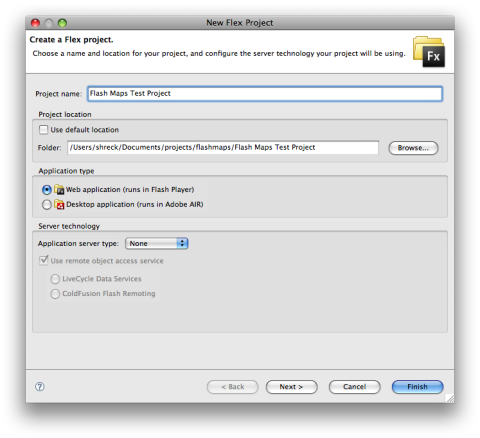
-
Click Finish and your project will be created. FlexBuilder will also automatically create a template
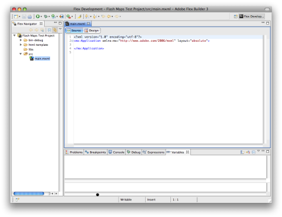MXMLfile, as shown below: -
Before you can compile your code, you will need to link it to the Google Maps API for Flash SWC file. To do so, select Project->Properties. A Properties dialog box will appear for your project. Click on Flex Build Path and then select the Library Path tab:
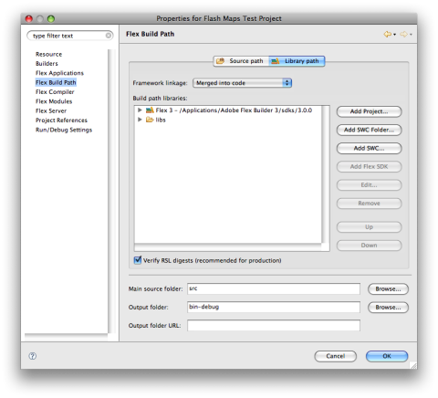 -
Click Add SWC... within the Library Path pane. An Add SWC dialog box will appear. Navigate to the location where you saved the Google Maps API for Flash SDK and select the appropriate
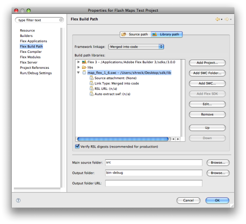lib/map_flex_*.swcfile and click OK. (Note: Make sure you select the correct SWC. FlexBuilder will not be able to use the non-Flex SWC library.) Your dialog box should now look like the following: -
Click OK. FlexBuilder will update your project and return you to the Flex Development Perspective showing your skeleton MXML file.
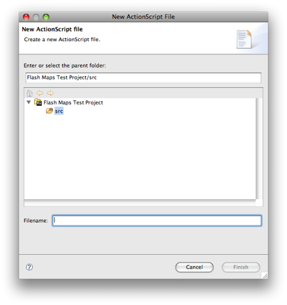
Linking to the Google Maps API for Flash Library
You may wish to test compilation of your skeleton MXML file at this point to ensure your development environment is working correctly.
Setting Up Your Development Directories
New! The Google Maps API for Flash now offers
native support for the com.google.maps.Map object within Flex. You no
longer need to extend the Map class to define your Map application class,
and you can use a Map component directly within Flex.
Flex applications are defined within MXML declarations. Generally, you
should provide these MXML application definitions in the root of your
source code directory. By default, FlexBuilder creates a src directory
within your project to place source code, and MXML files should reside at the root
of that directory.
Create a new MXML file by selecting File->New->MXML Application. name the MXML
file HelloWorld.mxml. We'll fill in this skeletal MXML application in the
following sections.
Using Namespaces to Manage Extensions
Components that extend any existing Google Maps API for Flash components should generally be provided as ActionScript files within a unique namespace. Google recommends that you use a namespace which you own to prevent collisions with other applications; this is especially important if you will have many developers working on multiple flash applications at the same time. Using namespaces also allows you to bundle your application code into packages, which allow easier sharing of common code.
Packages and namespaces should be defined using your
top level domain, your organization domain, and sub-domain. For example, the Google Maps namespace is defined
as com.google.maps and an examples package within that namespace would be defined
as com.google.maps.examples. You can then use this namespace to implicitly define the directory
structure of your application (e.g. com/google/maps/examples/).
You use this namespace to define a package within your ActionScript code,
and to define your application within the MXML declaration. Generally,
ActionScript code (*.as files) reside within the bottommost directory
of whatever namespace is defined, while the MXML declarations (*.mxml files)
reside at the "root" of the directory structure.
Writing the "Hello World" of the Maps API for Flash
The easiest way to start learning about the Google Maps API for Flash is to see a simple example. In this tutorial, using FlexBuilder we'll create a simple MXML file, add some ActionScript code, compile that file into a SWF file using the Flex SDK, and launch the file for visual inspection.
MXML Declarations
The MXML declaration defines UI elements within a Flex application, while embedded
ActionScript code within the <mx:Script> tag defines actions on those UI
elements. In the simplest case, you simply declare a com.google.maps.Map
object within MXML and initialize the map with ActionScript code:
Modify your HelloWorld.mxml file until it appears as shown below. We'll
walk through and explain the code within this file.
<?xml version="1.0" encoding="utf-8"?>
<mx:Application xmlns:mx="http://www.adobe.com/2006/mxml" layout="absolute">
<maps:Map xmlns:maps="com.google.maps.*" id="map" mapevent_mapready="onMapReady(event)" width="100%" height="100%" key="your_api_key" sensor="true_or_false"/>
<mx:Script>
<![CDATA[
import com.google.maps.LatLng;
import com.google.maps.Map;
import com.google.maps.MapEvent;
import com.google.maps.MapType;
private function onMapReady(event:Event):void {
this.map.setCenter(new LatLng(40.736072,-73.992062), 14, MapType.NORMAL_MAP_TYPE);
}
]]>
</mx:Script>
</mx:Application>
This example is located at gmaps-samples-flash.googlecode.com/svn/trunk/examples/HelloWorld.html. (MXML source is located here.) Note that you'd need to build your own SWF file, with your own API key, for this example to appear on your website.
Even in this simple example, there are several things to note:
- We declare an initial
<mx:Application>to hold all of our code, as is required for Flex applications. Within this<mx:Application>object, we declare anmxnamespace to reference the standard Flex components. - We declare a
Mapobject as a child of the<mx:Application>and define amapsnamespace to reference code fromcom.google.maps.*. We also define parameters including anid, amapevent_mapreadyhandler, an APIkey, and asensorstate. These parameters will be explained later. - We define ActionScript code within a child
<mx:Script>object. - Within that ActionScript code, we center the map on a location upon receipt of the
mapevent_mapreadyevent.
These steps are explained in more detail below.
Declaring Applications
<mx:Application xmlns:mx="http://www.adobe.com/2006/mxml" layout="absolute">
Google Maps Flash applications require not only ActionScript code but also a
user interface framework to display the map and any associated UI elements on a web page. Within
the Flex framework, these UI components are specified within an MXML declaration. An
MXML declaration consists of a configuration file with the .mxml suffix. This
MXML file commonly resides in the root of your ActionScript development
directory.
To display your Flash map on a webpage, you will need at least one MXML declaration.
All MXML declarations require a root <mx:Application> component.
Additionally, the <mx:Application> also registers the mx prefix
to reference standard Flex components.
Note that MXML declarations can be quite complex, and the layout of UI components within an MXML declaration is beyond the scope of this documentation. For more information, see the provided examples and consult the Flex SDK documentation.
Declaring the Map
<maps:Map xmlns:maps="com.google.maps.*" id="map" mapevent_mapready="onMapReady(event)" width="100%" height="100%" key="your_api_key" sensor="true_or_flase/>
The Google Maps API for Flash now includes native support for the Map
object defined within the com.google.maps.* package. We add a Map
here as a child of the <mx:Application>, define its namespace as
maps (linking it to the com.google.maps.* code), set an id
which we can reference the map from within the ActionScript code, and define a
mapevent_mapready handler. (See Event Handling below.)
The <maps:Map> declaration also specifies width and height
parameters to define how the Map will appear within the application. More importantly, the MXML
declaration acts as a convenient location to place your unique API key.
Writing the ActionScript Code
<mx:Script>
<![CDATA[
// ActionScript Code
]]>
</mx:Script>
Maps within the Google Maps API for Flash are manipulated using ActionScript 3.0 code. This tutorial will not attempt to teach the nuances of ActionScript. Online tutorials on ActionScript are available at the following locations:
- http://livedocs.adobe.com/flash/9.0/ActionScriptLangRefV3/
- http://www.adobe.com/devnet/flex/quickstart/coding_with_mxml_and_actionscript/
The <mx:Script> object is a Flex component that holds a reference to the
ActionScript code. Because MXML is a variant of XML, we also need to inform the MXML parser
to ignore the ActionScript code within this file through use of the <![CDATA[
and ]]> delimiters.
Note: you may instead wish to provide your ActionScript
within separate ActionScript (*.as) files. If you do so, you can reference the
ActionScript file by including a source parameter in the <mx:Script>
tag:
<mx:Script> source="HelloWorld.as"></mx:Script>
Placing code within separate files often makes sense if you have large or complex applications. However, within this document base, we will show all code inline within MXML declarations for simplicity.
Importing Libraries
import com.google.maps.LatLng;
import com.google.maps.Map;
import com.google.maps.MapEvent;
import com.google.maps.MapType;
ActionScript libraries are imported with the import declaration. In the sample
code above, we import several Google Maps Flash libraries.
You should ensure that you import libraries for types that you use within your sample code.
We recommend that you import only those classes you need. In most of the examples within
this documentation, we structure our code so that the <mx:Application>
does not use Flex UI components. Doing so provides a basic lightweight map. Note that
including any Flex libraries may substantially increase the size of your SWF files,
even if you only need one particular Flex component (such as a button).
Setting Up Event Listeners
ActionScript, like JavaScript, is an event-driven programming language. Interactions with users within Flash objects are handled by registering event listeners on objects for specific events.
In the code snippet in the previous section, the Map declaration added
an event listener to the Map object for the MapEvent.MAP_READY event
through the use of the special parameter mapevent_mapready. This event handler
acts as the "hook" for initialization of the Google Maps API for Flash application.
When the map receives that event, it calls the onMapReady function,
which is shown below.
function onMapReady(event:MapEvent):void {
setCenter(new LatLng(40.736072,-73.992062), 14, MapType.NORMAL_MAP_TYPE);
}
This onMapReady() function passes an event parameter of type
MapEvent (which is ignored in this case) and then calls setCenter()
using the given parameters (which define a location, a zoom level, and the type of map to show).
In general, it is good to "initialize" your map in such a manner by intercepting and handling the
MapEvent.MAP_READY event. Events are discussed in more detail within the
Map Events section of the Google Maps Flash documentation.
Note: You may also initialize your map by intercepting and
handling the MapEvent.MAP_PREINITIALIZE event instead. For information on this
event, see the discussion of MapOptions.
Events are discussed in more detail within the Map Events section of the Google Maps Flash documentation.
Compiling Your SWF File
We now have a HelloWorld.mxml within our source's root directory and
ActionScript code within that file's <mx:Script> object. We are ready to
compile our code into a SWF (Shockwave Flash) file. We can do so dirctly within FlexBuilder.
To execute FlexBuilder's compiler and launch the debug version of the Flash player, click one of the Run Tools located in FlexBuilder's toolbar. There are options to launch an optimized version, a debug version, or a version for profiling.
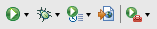FlexBuilder will compile the MXML application, build a SWF file, and automatically bring up your browser, displaying the following Flash SWF:
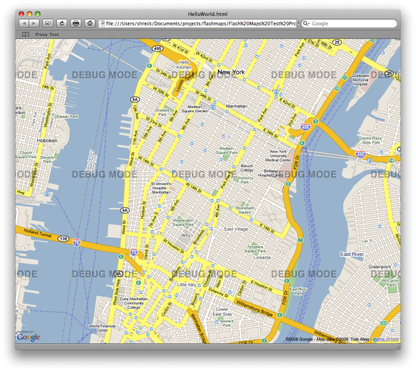Hosting Your SWF File in a Web Page
Google Maps Flash SWF files, if they are compiled with the API key included, can simply be
displayed as standalone files. This is useful for testing, but may not be practical for proper page
layout. As a result, you will likely want to set up an HTML page to contain the SWF file. To ensure
your SWF file executes within both Internet Explorer and other browsers, you should add the SWF
within both object and embed tags.
A simple HTML page that contains our HelloWorld.swf file appears below. For the
map to display on a web page, we must reserve a spot for it. We do so in this example by creating
a named div element and adding the object element to it.
<div id="map_canvas" name="map_canvas">
<object
classid="clsid:D27CDB6E-AE6D-11cf-96B8-444553540000"
codebase="http://download.macromedia.com/pub/shockwave/cabs/flash/swflash.cab#version=6,0,29,0"
width="800px"
height="600px">
<param name="movie" value="helloworld.swf">
<param name="quality" value="high">
<param name="flashVars" value="key=your_api_key&sensor=true_or_false">
<embed
width="800px"
height="600px"
src="helloworld.swf"
quality="high"
flashVars="key=your_api_key&sensor=true_or_false"
pluginspage="http://www.macromedia.com/go/getflashplayer"
type="application/x-shockwave-flash">
</embed>
</object>
</div>
Note that we add the API key and sensor parameters within a
flashVars parameter, separated by an & character. This
registration method is an alternative to compiling your key and sensor into the SWF file
within the MXML declaration. If values are specified here, they override values contained
within the SWF file or MXML declaration. Also note that the API key must match the domain
where the SWF file is hosted, not the domain where the HTML file may be hosted.
The resulting HTML page is shown below.
Congratulations! You've written your first Google Maps Flash application!
Developing Adobe AIR® Applications (Experimental)
The Google Maps API for Flash now not only supports development of Flash applications within the browser, but there's also an experimental feature that supports Adobe AIR® applications running on the desktop. AIR applications provide additional capabilities not available to applications running within a browser, including file and local network access, application state persistence, and data access.
What is AIR?
AIR is a runtime environment that allows applications to run natively within a variety of operating systems from a common code base. An AIR Installer compiles this code into a format usable by the runtime environment. AIR applications allow you the freedom to interact directly with the desktop, providing file access, data storage, and robust user interface components across operating systems.
More information on Adobe AIR is located at http://www.adobe.com/products/air/.
Installing AIR
To run Adobe AIR applications, you will need to download and install Adobe's AIR runtime environment. This installation includes Adobe's AIR installer, which converts Adobe AIR executable files into applications which can run on your operating system. Make sure you're also using version 1.8 or higher of the Google Maps API for Flash SWC file, which adds AIR support.
The latest AIR release is available at: http://get.adobe.com/air/. Download the file from this location and install it per Adobe's instructions. This tutorial was developed using the Adobe AIR 1.1 Installer.
(Note: Mac OS X developers who have trouble running AIR might want to check out this fix.)
Creating an AIR Project in FlexBuilder
FlexBuilder is capable of creating either Flash applications for use within the Flash plugin within a browser, or standalone AIR applications for use within the operating system.
Before you begin coding your AIR application, you should first set up an AIR-compatible project within FlexBuilder. To do so, follow these simple steps:
- Select File->New->Flex Project within FlexBuilder. The New Flex Project dialog box appears. Enter the name for your project, a location to store files related to the project, and set the Application Type to Desktop Application (runs in Adobe AIR). 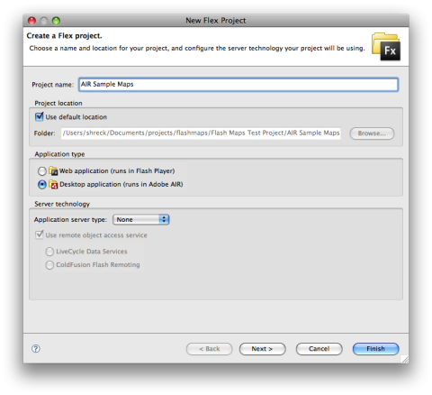
-
Click Next, specify an output folder (leaving the default as
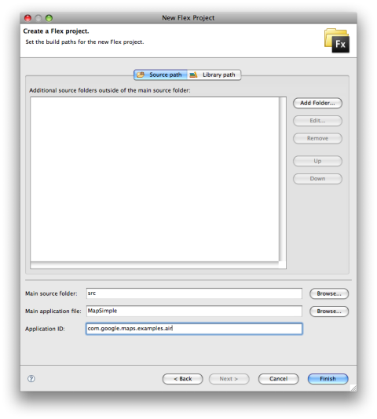bin-debugis fine), and then click Next again. You will be brought to the Source path and Library path configuration panel. Select a name for your Main application file and add an Application ID, which should generally be "package-like" (for example:com.google.maps.examples.air). -
Before you can compile your code, you will need to link it to the Google Maps API for Flash SWC file. To do so, click the Library Path tab and click Add SWC.... An Add SWC dialog box will appear. Navigate to the location where you saved the Google Maps API for Flash SDK and select the appropriate
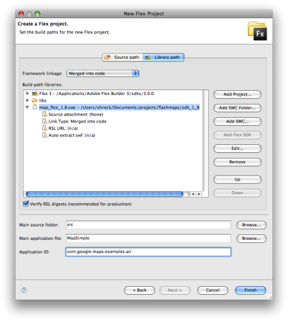lib/map_flex_*.swcfile and click OK. (Note: Make sure you select the correct SWC. FlexBuilder will not be able to use the non-Flex SWC library.) Your dialog box should now look like the following: -
Click Finish. FlexBuilder will update your project and you return you to the Flex Development Perspective showing a skeleton MXML file.
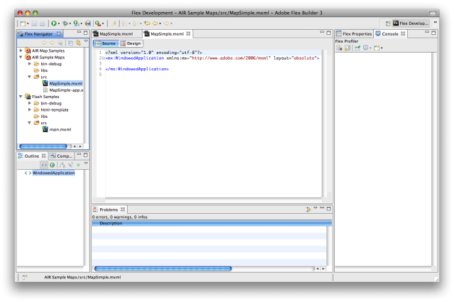
You may wish to test compilation of your skeleton MXML file at this point to ensure your
development environment is working correctly. Since the file is empty except for a single
mx:WindowedComponent object, you will only see a blank window appear.
Code Changes for AIR Applications
Creating Google Maps API for Flash AIR applications is similar to creating SWF files for use within a browser with two exceptions:
- Instead of an
mx:Application, the root of the AIR application is amx:WindowedApplication. This should be created by default when you create your initial project. Mapobjects within AIR applications properties must have aurlproperty set to an online location where the purpose and scope of the application is described. Thisurlmust be the same URL that your registered when signing up for an API key.
Because AIR applications have access to the file system, they can perform tasks that browser-based applications cannot easily do. We'll add some code to our test application that responds to user clicks by writing the clicked latitude/longitude value to a text file.
Within the Flex Development Perspective of FlexBuilder, copy the following code (this code is the same
as the code in the "Hello World" tutorial above except that the mx:Application has been changed
to an mx:WindowedApplication and the Map.url property has been set.
<?xml version="1.0" encoding="utf-8"?>
<mx:WindowedApplication xmlns:mx="http://www.adobe.com/2006/mxml" layout="absolute">
<maps:Map xmlns:maps="com.google.maps.*" id="map" mapevent_mapready="onMapReady(event)" width="100%" height="100%"
url="http://code.google.com/apis/maps/" key="your_api_key" sensor="true_or_false"/>
<mx:Script>
<![CDATA[
import com.google.maps.LatLng;
import com.google.maps.Map;
import com.google.maps.MapEvent;
import com.google.maps.MapType;
private function onMapReady(event:Event):void {
this.map.setCenter(new LatLng(40.736072,-73.992062), 14, MapType.NORMAL_MAP_TYPE);
}
]]>
</mx:Script>
</mx:WindowedApplication>
Now that we have this skeleton file, we'll add the capability to process event clicks and write the current location to a text file.
-
Add this additional
importstatement to addMapMouseEventfunctionality:import com.google.maps.MapMouseEvent; -
Within the existing
onMapReadyevent handler, add the following code to register an event listener for mouse clicks, and create anonMapClickevent handler:private function onMapReady(event:Event):void { this.map.setCenter(new LatLng(40.736072,-73.992062), 14, MapType.NORMAL_MAP_TYPE); this.map.addEventListener(MapMouseEvent.CLICK, onMapClick); } private function onMapClick(event:MapMouseEvent):void { } -
Within the
onMapClickfunction, add the following code to process the current mouse location as a latitude/longitude and write the output to a file named"locations.txt". Note that because AIR applications are Operating-System neutral, we need to obtain a reference to this file via theresolvePathmethod.private function onMapClick(event:MapMouseEvent):void { var file:File = File.documentsDirectory.resolvePath("airTest/locations.txt"); var fileStream:FileStream = new FileStream(); fileStream.open(file, FileMode.APPEND); fileStream.writeUTF(event.latLng.toString()); fileStream.writeUTF("\n"); fileStream.close(); } -
Now we can test our application by clicking the Run button in FlexBuilder's menu bar:
FlexBuilder will compile the application and bring up a window displaying Manhattan.
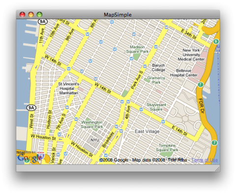Click on any point on the map. The application will then write a
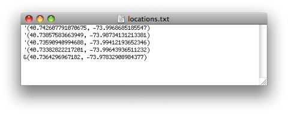"locations.txt"file within an"airTest"directory in your Documents directory (/Users/username/Documents/in Mac OS,C:My Documents\in Windows). Opening that text file, you should see a simple latitude/longitude for the location you clicked:
Exporting AIR Applications
AIR applications run natively within the operating system, and often have access to sensitive information, such as the file system. Because of this, it is important to trust the applications that run on the desktop. All AIR applications must be digitally signed by a certificate authority, and FlexBuilder allows you to specify this certificate when generating the release build.
FlexBuilder also allows you to "self-sign" your own applications for testing purposes or internal applications, but if you plan to provide your application to other users, you should obtain a commercial certificate from a certification authority such as Thawte or VeriSign.
More information about digitally signing your Adobe AIR applications is available at: http://www.adobe.com/devnet/air/articles/signing_air_applications_print.html.
We'll now want to export an AIR installation file (denoted with an *.air suffix). To do so, we'll need
to create a test certificate and generate a release build from FlexBuilder.
Within FlexBuilder, select Project->Export Release Build. The Export Release Build dialog box will appear:
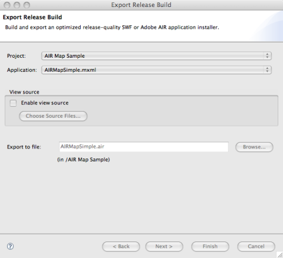Make sure the correct project and application are selected and click Next. The Digital Signature panel will appear. Ensure that Export and sign an AIR file with a digital certificate is currently selected. If you have a commercial certificate, you can browse and select that certificate, supply its password and click Finish. However, if you don't currently have a certificate, select Create and the Create Self-Signed Digital Certificate dialog box will appear:
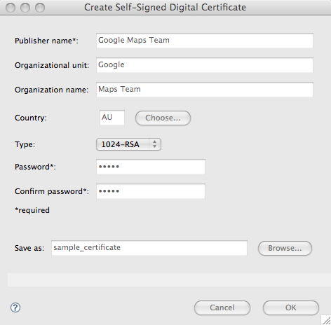Within the Create Self-Signed Digital Certificate dialog box, enter a Publisher name,
a password, and a filename for the certificate. Click OK and the Export Release Build
dialog box will be populated with this certificate information. Click Finish. FlexBuilder will
compile your application and generate an *.air file. This file can then be installed as
an application via the AIR Application Installer.
Installing and Running Your AIR Application
We now have an AIR installation file located in our output directory. To install this AIR application:
-
Double-click on the MapSimple.air file. The Application Install dialog box will appear:
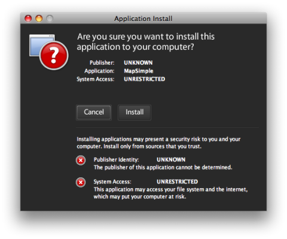 -
Since this application is self-signed, the AIR Installer will warn you that the Publisher of the application is UNKNOWN and that the application has UNRESTRICTED System Access. As we've generated this file ourselves, we don't need to worry, so click Install. The Installation dialog box will then ask you to specify an installation location:
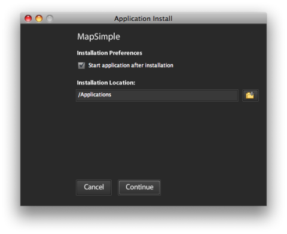 -
Select an Installation Location, leave the Start application after installation checkbox checked, and the MapSimple application will appear:
Congratulations! You've written your first Google Maps AIR application!